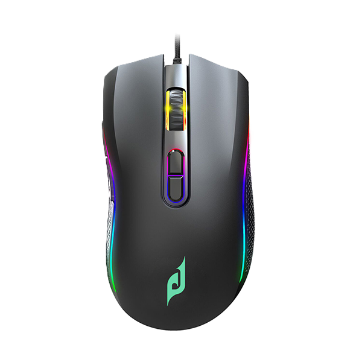

Open-source mouse software
E-DRA EM624 Configurator
Remap buttons, adjust DPI and lighting, edit onboard macros, and save or restore mouse profiles on Windows and Linux.

Open-source mouse software
Remap buttons, adjust DPI and lighting, edit onboard macros, and save or restore mouse profiles on Windows and Linux.
